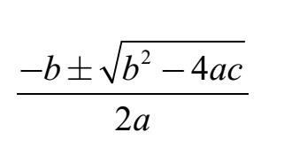
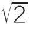
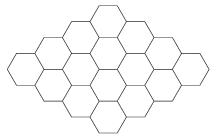
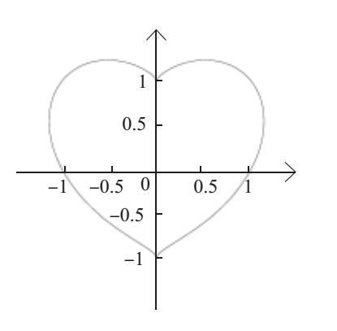

数学，有趣而美妙。在不同门类的学科里，都有人们熟悉的“代表作”。美术有《蒙娜丽莎》，戏剧有《哈姆雷特》，生物学有遗传DNA，考古学有对罗塞塔石碑的破译，物理学有方程式E = mc2。但是，数学方面很难说得明确——我想要与您分享的正是我自己最钟爱的那些数学经典。
对某些人而言，将数学描述为“快乐”和“美丽”可能看起来不对劲，但是我们不该将精彩的数学与烦琐的算术混为一谈，就如同不应该将阅读伟大的文学作品与学习拼写时的死记硬背等同视之。
正如拥有大量馆藏的美术博物馆只能展览部分作品一样，作为这本书的“馆长”，我也只能精心选出部分内容呈现在这里。
没有人要求我只能展示一枚数学珍宝，不过要真是那样，我也有自己的选择，那就是：对质数有无限多的证明。而这也勾勒出我对这本书的主题进行取舍的原则：
关于质数有无限多的证明，见本书第1章。
如果你不是数学家，恐怕会感到陌生。读者或许听说过质数这个概念，但恐怕没有思考过“到底有多少个质数？”这个问题。
强调证明（proof）这个概念，特别是利用反证法（proof by contradiction）去证明。
不需要大学程度的数学能力，只要利用高中生常用的数学工具，我们就可以解决书中所有的问题。
答案不是很明显，而且会带给你惊喜——我们很容易理解有无数的偶数和正方形，质数的排列却并不存在一个清晰的定式，但是你会惊讶地发现，只需要一个简单的理由，就能必然推导出质数有无限多的结论。
存在着实际的应用：质数的这一特性被密码学所运用。
尽管本书所涉及的各类专题不一定同时具备上述全部特征，但每一章都将包含数学的神奇之处，肯定能够让读者感到惊讶和好奇。
1940年，英国数学家戈弗雷·H. 哈代（Godfrey H.Hardy）出版了《一个数学家的辩白》（A Mathematician's Apology），从他的个人角度阐释了毕生数学研究的正当理由。在他的《辩白》中，哈代解释了自己所经历的喜悦和满足。不过解释数学带来的喜悦就如同想要解释游泳带来的乐趣：除非一个人可以漂浮一小会儿，并在清凉的水中扑腾几下，否则很难理解游泳的乐趣。
我担心许多人所接受到的数学教育是枯燥和乏味的。想象一下，如果孩子们的阅读教育主要集中在学习拼写和标点符号上，而不是阅读《哈利·波特》或者着手创作属于自己的故事，那么这几乎很难激发起学生对于文学的热爱。
以下是一些人可能会对自己所接受的数学教育所进行的滑稽描述：
在小学时，我有10个橘子，但有人拿走了3个。他们为什么这么做？我本来也会分享的啊。
在初中时，我找到了公分母，以及百分比。
在高中时，我学到了二次方程式，我仍然可以背出来——但是我不知道这有什么意义。

当然，数学有很强的实际应用价值，但数学也有其深刻的美。我们的目标就是与读者们分享一点这样的美好。
数学是关于数字和形状的研究。因此，我选取了这两个概念作为本书前两部分的主题。
在第一部分“数”中，我们将探索一些特定数字（如

和e）以及数列（如质数和斐波那契数列）。我们为读者准备了很多惊喜，例如一个无穷（infi nity）怎么样可以比另一个无穷“更加无穷”，以及为什么有更多的数字以1开头，而不是9。在“形状”部分，我们将见到一些熟悉的朋友（如三角形和圆形），还有三维图形（柏拉图式立体）和大于一维但小于二维的形状（分形）。还有许多惊喜在前方等着你。例如，我们很容易理解该如何用正方形或正六边形来铺地板，但其实使用正五边形也“可能”做到。你感到惊讶吗？好奇吗？这是我所希望见到的。

用正六边形平铺
我们以“不确定性”作为本书的最终部分，探讨随机的、不可预知的和违反常理的问题。高精度的医学测试给出的结果为何通常是错误的呢？排名有没有意义？当两名以上候选人竞选时，选举公职人员的“最佳”方式是什么？与前面的内容一样，惊喜依旧在向你招手。
有些章节确实提到了之前的内容，但它们之间相互依赖的程度是很微弱的。
这本书里的每一章都是独立的，你可以按任何顺序随时阅读。内容的难度各不相同，暂时跳过更具挑战性的部分，等稍后再重新拾起，也是不错的选择。
慢慢来。本书中的章节都很短，但需要时间和精力来掌握这些观点。我经常给出一些计算或代数来支撑各个要点，读者可以通过铅笔和稿纸分步骤进行运算，以便更好地了解整个过程。有时也可能需要重读几遍材料才能搞明白。
如果可能，请不要独自阅读本书。叫上一个朋友，一起讨论书中的观点。为了让朋友理解你的观点，你必须要认真复述书中的内容，这将有助于你对这些概念的理解。
在每一个章节中，比较复杂的观点都安排在后面。因此，如果读到一半你感觉“已经差不多了”，那么也可以开始阅读另外一章。
你也许看到过这么一个方程式：
（x2+y2–1）3=x2y3
哪对数字（x，y）可以满足这个方程？例如，当x=1且y=0时，那么方程式的两边都等于相同的数字，即0。同样，当x=–1且y=1时，方程式的两边都等于1。换句话说，（1,0）和（–1,1）都是这个方程的解。请注意（0，0）不是解。

这个方程有无穷多的解，其中包括：
x=0.70711…且 y=–0.41401…
如果这样，方程式的两边等于–0.03548…。
尽管这个方程式的解有无穷多，我们依然可以通过绘制这个方程的图形将解可视化。这意味着在（x，y）的坐标平面图中用点标出方程式所有的解。当我们标注完时，平面图上会出现一个图像，这就是右边你所看到的心形曲线。
你是不是已经有些爱上数学了？等读完这本书后，你一定会的！
我想感谢在本书筹备过程中给我积极反馈以及为我提供建议的人，他们的帮助令我受益匪浅。这些人包括了：莫迪凯·莱维-艾歇尔（Mordechai Levy-Eichel），乔舒亚·明金（Joshua Minkin），约尼·纳迪夫（Yoni Nadiv），埃米·沙伊纳曼（Amy Scheinerman），丹尼尔·沙伊纳曼（Daniel Scheinerman），乔纳·沙伊纳曼（Jonah Scheinerman），莱奥拉·沙伊纳曼（Leora Scheinerman），内奥米·沙伊纳曼（Naomi Scheinerman）和瑞秋·沙伊纳曼（Rachel Scheinerman），他们对早期的书稿做出了评论，并提出了有用的建议。
特别感谢丹尼（Danny）对这本书的英文书名提出的建议，感谢约拿（Jonah）在第7章绘制的望远镜。
在评估本书以备出版的过程中，我收到了一些审稿人的积极反馈，其中绝大多数反馈都是匿名的，但还是有些人很高兴告诉我他们的身份（和善意的评论）。感谢克里斯托夫·博格斯（Christoph Börgers），安娜·拉-萧斯卡（Anna La–chowska）和贾亚德夫·阿瑟里亚（Jayadev Athreya）的反馈，以及他们对本书的热情。
我同样要向阿特·本杰明（Art Benjamin）致谢，他向我提供了第19章中德州扑克的材料。这个例子可以在斯图尔特·N. 埃蒂尔（Stewart N. Ethier） 2010年春出版的《机会原则：赌博的概率方面》（The Doctrine of Chances: Probabilistic Aspects of Garnbling）中找到。
最后，非常感谢耶鲁大学出版社给予本书英文版的所有帮助。首先，感谢我的编辑乔·卡拉米亚（Joe Calamia）的热情，他向我提供了很多有用的建议，并不厌其烦地回答我的问题。还要感谢安-玛丽·因博尔诺妮（Ann–Marie Imbornoni），她为编辑定稿提供了有力支持，感谢利兹·凯西（Liz Casey）对稿件进行的编辑，感谢伊娃·斯凯维斯（Eva Skewes）在行政工作上提供的支持，感谢索妮亚·香浓（Sonia Shannon）的版式设计，以及托马斯·斯塔尔（Thomas Starr）赏心悦目的封面设计。